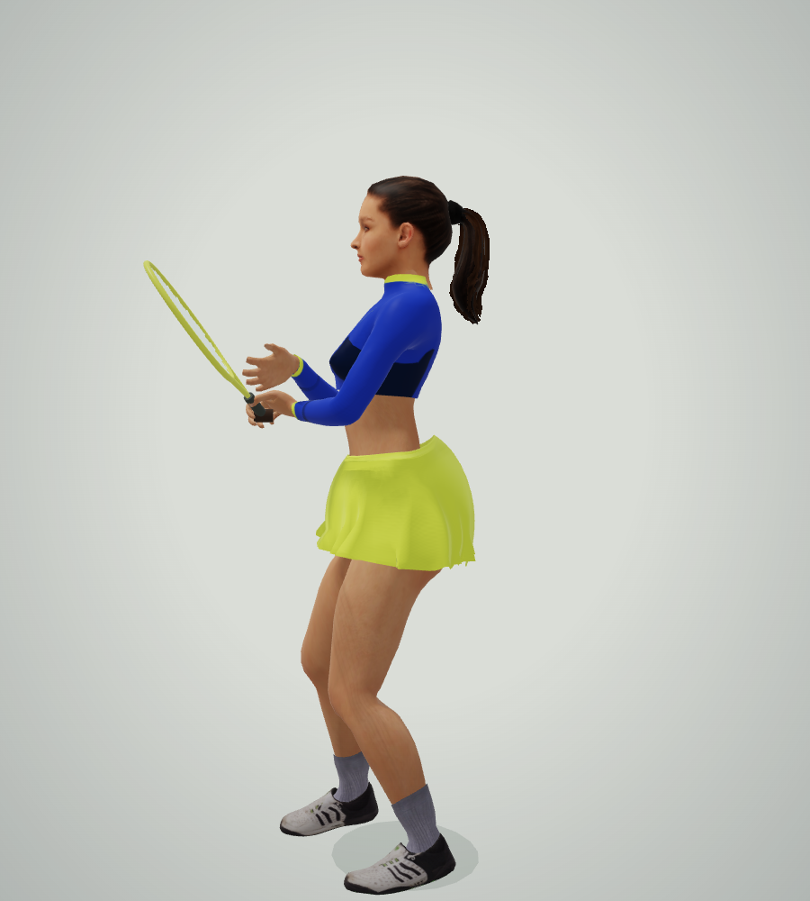
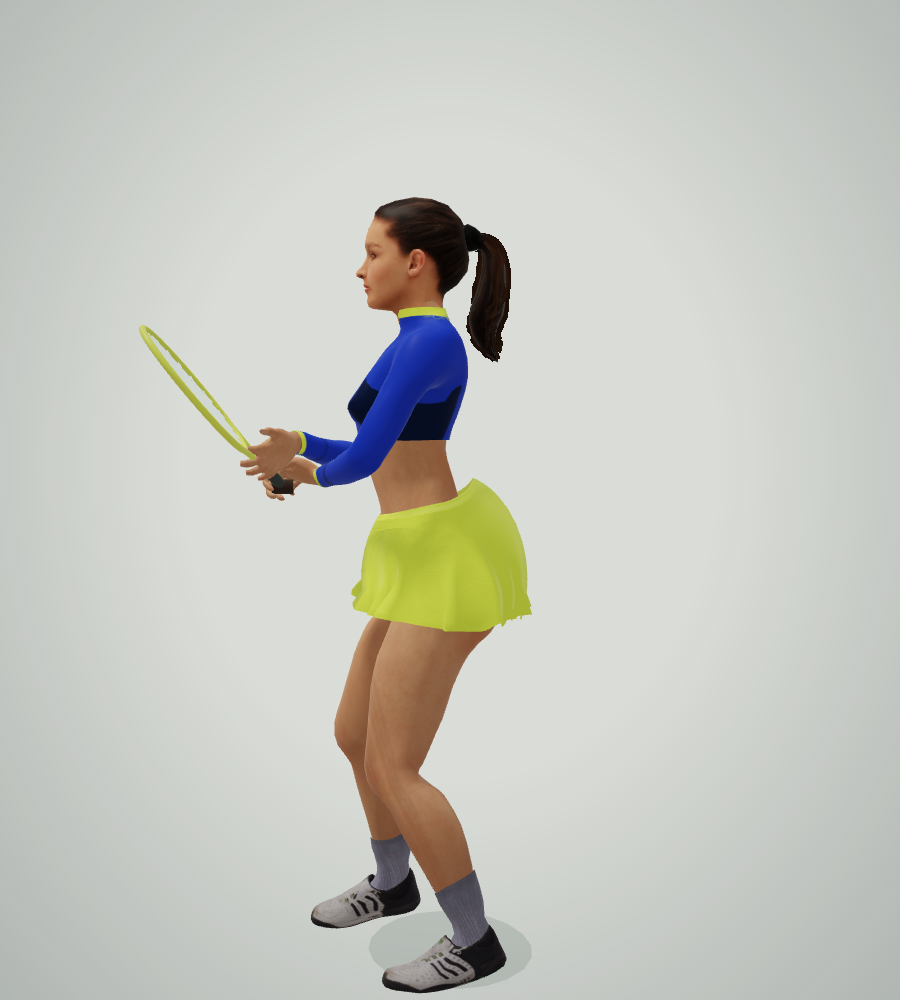

<!doctype html><meta charset="utf-8"><title>Ready pose before and after</title><style>body{margin:0;background:#e0e3de;font:20px system-ui;color:#213c33;display:flex}figure{margin:0;width:50%}figcaption{height:46px;padding:9px 20px;box-sizing:border-box}img{display:block;width:100%}</style><figure><figcaption>Before · floating support hand, upright torso</figcaption></figure><figure><figcaption>After · supported racket, forward hip hinge</figcaption></figure>